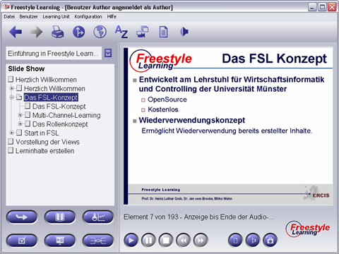

Über die Slide Show können Sie an einer virtuellen Vorlesung teilnehmen. Jedes Element der vom Typ "Slide Show" enthält mehrere Einzelbilder als Unterelemente. Um eine bestimmte Slide Show zu starten, klicken Sie auf das Element vom Typ "Slide Show" und drücken Sie die Schaltfläche zum Abspielen. Während der Präsentation werden die Einzelbilder zeitgesteuert präsentiert und die Erläuterungen des Autors dazu wiedergegeben. Sie können die Präsentation jederzeit mit der Pausetaste oder Stoptaste anhalten oder beenden und auf den Anfang zurücksetzen. Hit Hilfe der Navigationstasten der Interaktionsleiste können Sie innerhalb der Präsentation Vorwärts- oder Rückwärtsnavigieren.

Neben den Standard-Interaktionsschaltflächen existieren weitere view-spezifische Interaktions-Schaltflächen.
View-spezifische Interaktions-Schaltflächen
|
Abspielen | Ausgewählte Präsentation starten |
| Pause | Während der Wiedergabe pausieren | |
| Stopp | Präsentation zurücksetzen und beenden | |
| Voriges/Nächstes Bild | Während der Präsentation ein Bild zurück / vor bewegen |
Die Wiedergabe können Sie durch Drücken von "Pause" unterbrechen, erneutes Drücken von "Abspielen" setzt die Präsentation fort. Sie können auch einzelne Bilder vor- und zurückblättern. Drücken der "Stopp"-Schaltfläche beendet eine Präsentation.
Zurück zur Hauptseite